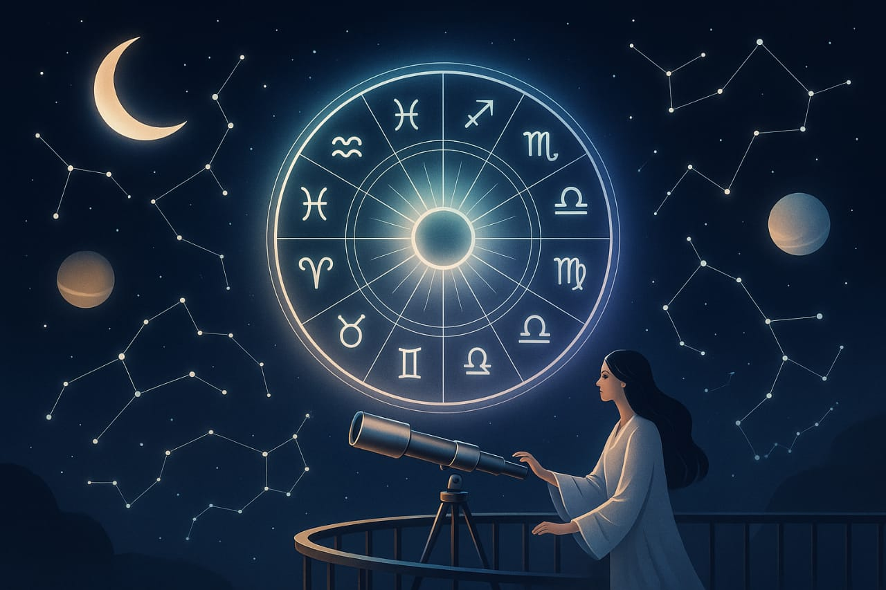
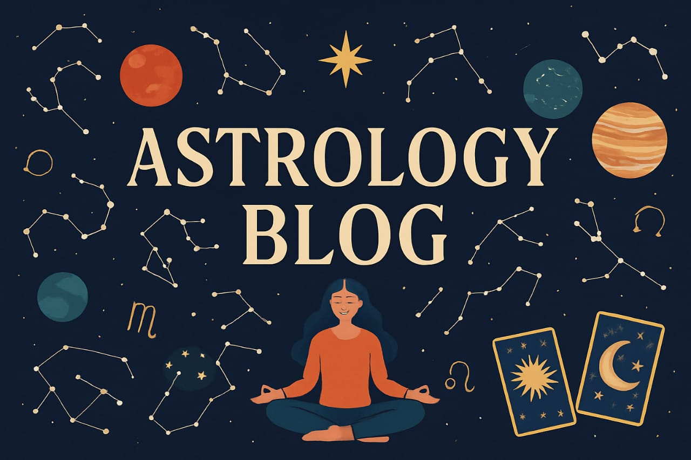

1st may, 2024
01. Unlocking the Stars: Your Guide to Mordern Astrology
Explore the cosmos with confidence as we decode the Mysteries of the zodiac "Unlocking the Stars" is your go-to guide for mordern astrology, offering daily horoscopes, birth chart insights, planetary transits, and cosmic wisdom tailored for today's world.
Whether you're a curious beginner or a seasoned star-reader, discover hoe the universe shapes your destiny-one sign at a time. "Unlocking the stars" helps yoou understand your zodiac sign, planetary transits, and how the cosmos influences your life-perfect for beginners and astrology lovers alike.

3rd july, 2024
02. Celestial Insights: Daily Astrology & Cosmic Trends
Stay aligned with the stars through daily horoscopes, cosmic forescasts, and planetary updates. "Celestial Insights" delivers timely astrology trends and zodiac wisdom to help you navigate life with clarity and cinfidence.
Daily horoscopes and astrologytrends to guide youe day. Explore zodiac insights and stay in tune with the cosmos.
.jpg)
11th nov, 2024
03. The Zodiac Journal: Mysteries of the Stars Revealed
Welcome to the Zodiac Journal, your Celestial companion in uncovering the ancient wisdom and mordern revelations of astrology. Dive deep into the Mysteries of the stars as we explore zodiac signs, birth chart, planetary movements, and astrology phenomena shaping your daily life.
From in-depth articles on personality traits to forecasts for love, career, and wekkness, this journal is your gateway to understanding the universe's influence on your journey.